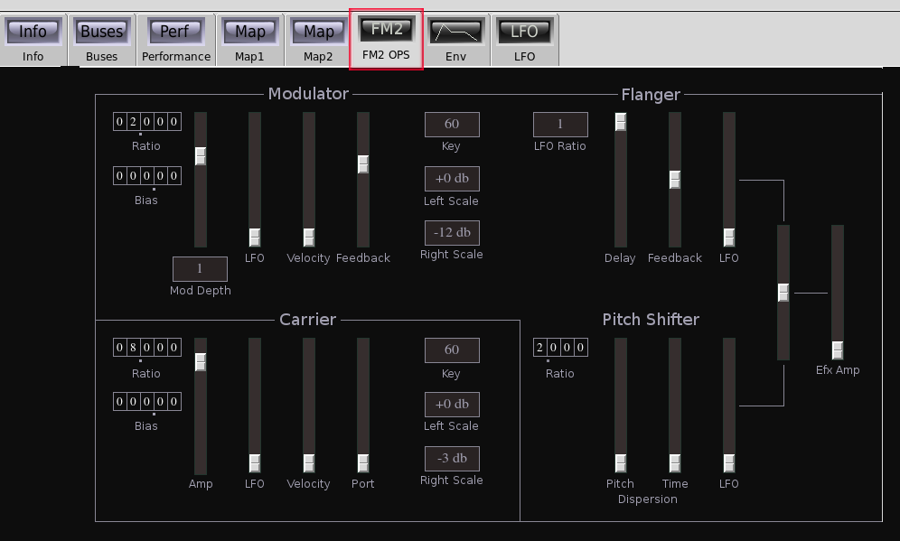
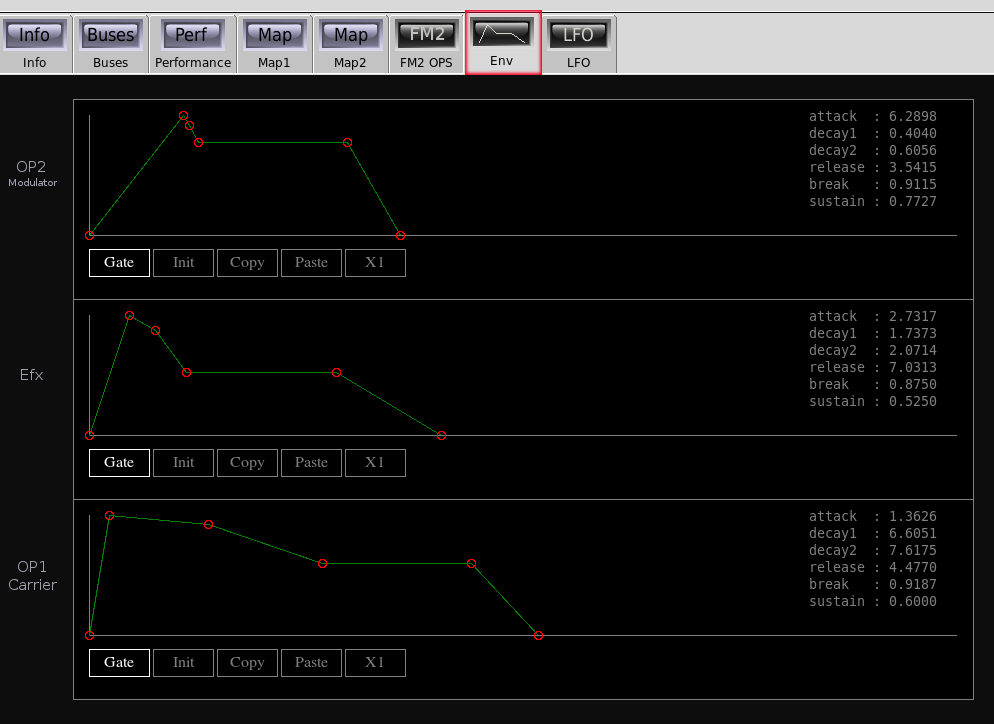
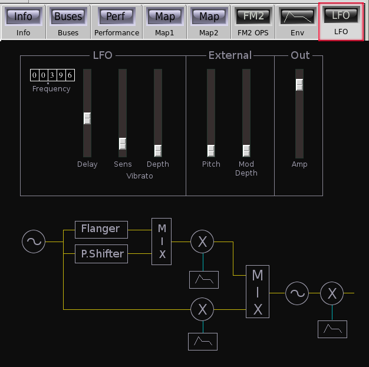

Fm2

| Home | Contents | Synth Catalog | Previous: Combo | Next: Io |
FM2 is a 1 carrier, 1 modulator, FM synth with effects on the modulator signal.
 Modulator:- Ratio tumbler, modulator frequency ratio.
- Bias tumbler, bias added to modulator frequency.
- Mod Depth slider, modulation depth.
- Mod Depth button, modulation depth scale factor.
- LFO, LFO to modulation depth.
- Velocity, modulator velocity sensitivity.
- Feedback, FM feedback amount.
- Key button, key scale reference key.
- Left Scale button, left side key scale depth in db/octave.
- Right Scale button, right side key scale depth in db/octave.
Flanger:
- LFO ratio, frequency ratio of flanger LFO relative to the vibrato LFO.
- Delay - flanger initial delay
- Feedback - flanger feedback
- LFO - flanger LFO applied to delay time.
- Ratio - pitch shift amount
- Pitch dispersion - randomize pitch shift ratio.
- Time dispersion - randomize time of pitch shift signal.
- LFO - amount of flanger LFO applied to pitch shift amplitude.
- (unlabeled slider) - sets relative mix between flanger and pitch shifter.
- Efx Amp - amount of effect applied to modulator.
Carrier:
The carrier controls are identical to the modulator except the modulation depth is replaced with carrier amplitude.
Envelopes:
The three ADDSR envelopes applies to the modulator depth, modulator effects level and carrier output.
LFO:
The primary LFO is used for vibrato, modulation depth and carrier tremolo. A second LFO, dedicated to modulator effects, is detailed above.
- Frequency tumbler.
- Delay slider, onset delay.
- Sens slider, vibrato sensitivity.
- Depth slider, vibrato depth.
- Pitch - external control applied to pitch.
- Mod Depth - external control applied top modulation depth.
- Amp - Main volume slider
Buses:
- outbus - audio output.
- xbus - control input.
Parameters:
- amp - Output amplitude (0.0 ... 2.0)
- xPitch - External control to pitch (0.0 ... 1.0)
- xModDepth - External control to modulation depth (0.0 ... 1.0)
- xScale - External control signal scale
- xBias - External control signal bias
- lfoFreq - Primary LFO frequency (0.0 ... 99.999)
- lfoDelay - Vibrato onset delay (0.0 ... 4.0)
- vsens - Vibrato sensitivity (0.0 ... 1.0)
- vdepth - Programmed vibrato depth (0.0 ... 1.0)
- vibrato - Manual vibrato depth (0.0 ... 1.0)
- op1Enable - Enable carrier output (0|1)
- op1Ratio - Carrier frequency ratio (0.0 ... 99.999)
- op1Bias - Carrier frequency bias (0.0, ... 999.99)
- op1Amp - Carrier amplitude (0.0 ... 2.0)
- op1Attack - Carrier attack time (0.0 ... 12.0)
- op1Decay1 - Carrier initial decay time (0.0 ... 12.0)
- op1Decay2 - Carrier second decay time (0.0 ... 12.0)
- op1Release - Carrier release time (0.0 ... 12.0)
- op1Breakpoint - Carrier envelope breakpoint (0.0 ... 1.0)
- op1Sustain - Carrier envelope sustain level (0.0 ... 1.0)
- op1GateHold - Carrier envelope mode (0=gate, 1=triggered)
- op1Keybreak - Carrier keyscale key (0,6,12,...,114,120,126)
- op1LeftScale - Carrier left keyscale depth (-18,-15,-12,-9,-6,-3,0,+3,+6,+9,+12,+15,+18)
- op1RightScale - Carrier right keyscale depth (-18,-15,-12,-9,-6,-3,0,+3,+6,+9,+12,+15,+18)
- op1Lfo - Carrier LFO depth (0.0 ... 1.0)
- op1Velocity - Carrier velocity sensitivity (0.0 ... 1.0)
- psRatio - Pitch shifter ratio (0.0 ... 4.0)
- psPDispersion - Pitch shifter pitch dispersion (0.0 ... 1.0)
- psTDispersion - Pitch shifter time dispersion (0.0 ... 1.0)
- psLfoDepth - (flanger) LFO to pitch shifter amplitude (0.0 ... 1.0)
- op2Enable - Modulator enable (0|1)
- op2Ratio - Modulator frequency ratio (0.0 ... 99.999)
- op2Bias - Modulator frequency bias (0.0, 999.99)
- op2Amp - Modulation depth (0.0 ... 1.0)
- op2AmpRange - Modulation depth scale (1,10,100,1000,10000)
- op2Attack - Modulator attack time (0.0 ... 12.0)
- op2Decay1 - Modulator initial decay time (0.0 ... 12.0)
- op2Decay2 - Modulator second decay time (0.0 ... 12.0)
- op2Release - Modulator release time (0.0 ... 12.0)
- op2Breakpoint - Modulator envelope breakpoint (0.0 ... 1.0)
- op2Sustain - Modulator envelope sustain level (0.0 ... 1.0)
- op2GateHold - Modulator envelope mode 0=gate, 1=triggered
- op2Keybreak - Modulator keyscale key (0,6,12,...,114,120,126)
- op2LeftScale - Modulator left keyscale depth (-18,-15,-12,-9,-6,-3,0,+3,+6,+9,+12,+15,+18)
- op2RightScale - Modulator right keyscale depth (-18,-15,-12,-9,-6,-3,0,+3,+6,+9,+12,+15,+18)
- op2Lfo - LFO to modulation depth (0.0 ... 1.0)
- op2Velocity - Velocity to modulation depth (0.0 ... 1.0)
- op2Feedback - Modulator feedback (0.0 ... 4.0)
- efxMix - Mix between flanger and pitch shifter -1.0 = flanger, +1.0 = pitch shifter.
- efxAmp - Modulator effects mix (0.0 ... 1.0)
- efxAttack - Modulator effect attack time (0.0 ... 12.0)
- efxDecay1 - Modulator effect initial decay time (0.0 ... 12.0)
- efxDecay2 - Modulator effect second decay time (0.0 ... 12.0)
- efxRelease - Modulator effect release time (0.0 ... 12.0)
- efxBreakpoint - Modulator effect envelope breakpoint (0.0 ... 1.0)
- efxSustain - Modulator effect envelope sustain level (0.0 ... 1.0)
- efxGateHold - Modulator effect envelope mode 0=gate, 1=triggered
- efxLfoRatio - Effect LFO frequency ratio *see below
- flangerDelay - Flanger delay (0.00 ... 0.05)
- flangerFeedback - Flanger feedback (-1.0 ... +1.0)
- flangerLfoDepth - LFO to flanger delay (0.0 ... 1.0)
*Effect LFO ratios: (1/16, 1/8, 1/4, 1/3, 1/2, 3/4, 1, 4/3, 3/2, 2, 3, 4)
| Home | Contents | Synth Catalog | Previous: Combo | Next: Io |